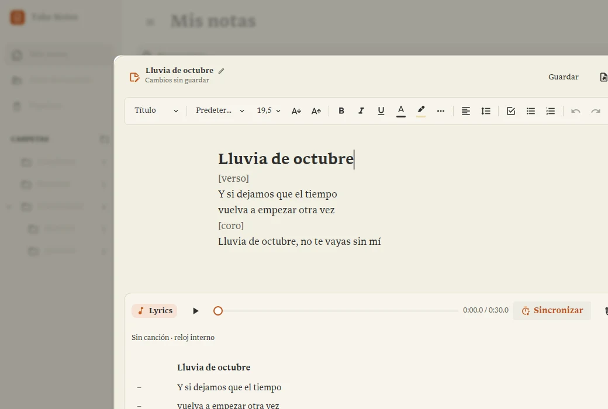

Guía práctica · Disponible también en Configuración › Ayuda
Anotaciones de Lyrics
Las anotaciones son indicaciones para ti: se guardan en la nota, pero no forman parte de lo que se canta. Usa corchetes simples, como [verso], [coro x2], [suave] o [respirar].
Preparar la letra
- Abre una nota y activa Lyrics con el botón de la nota musical en la barra del editor.
- Escribe cada línea que se canta en un párrafo distinto, pulsando Enter al terminarla.
- Escribe una indicación sola, por ejemplo [verso], en su propio párrafo; también puedes añadirla dentro de una línea, como Vuelvo a casa [suave].
- Adjunta una canción desde ⋯ › Adjuntar o cambiar la canción… si quieres. Sin audio puedes usar el reloj interno.
Qué se ve y qué se escucha
| Lo que escribes en la nota | Lo que aparece al reproducir |
|---|---|
| [verso] | Se omite toda la línea. |
| Vuelvo a casa [suave] | Vuelvo a casa |
| Una [respirar] vez más | Una vez más |
| [coro x2] [fuerte] | Se omite toda la línea. |
En el editor, las anotaciones se ven más suaves cuando Lyrics está activo. El texto original permanece en la nota y puedes editarlo o quitar los corchetes para que vuelva a cantarse.
Sincronizar sin marcar las indicaciones
- Activa Sincronizar y pulsa Marcar o Espacio cuando empiece cada línea cantada. Si estás escribiendo en el editor, pulsa primero Marcar para pasar al control de sincronización.
- Las líneas que contienen solo anotaciones se saltan y no reciben tiempo. En una línea mixta se sincroniza el texto cantado.
- Sin canción, la primera marca arranca el reloj interno. Puedes pausar o corregir el tiempo pulsando el tiempo de cada línea.
- Abre Letra para comprobar el resultado: las indicaciones no se muestran. Al exportar desde ⋯ › Exportar letra (LRC)…, tampoco se incluyen.
Detalles que conviene conocer
- [coro x2] es una indicación escrita: no repite la canción ni las líneas automáticamente. Para cantar un coro dos veces, escribe y sincroniza sus dos apariciones.
- Cierra los corchetes en la misma línea: [suave]. Un corchete sin cerrar se conserva como texto normal. Evita anidar corchetes.
- Usa un solo par de corchetes para las anotaciones. [[ abre el buscador de enlaces entre notas.
- Una anotación como [coro] no equivale a un encabezado de sección: la anotación se oculta al reproducir; las secciones se gestionan con los títulos y el selector de sección de Lyrics.
- Las anotaciones siguen guardadas en el archivo .tnm. La limpieza se aplica al reproductor y al LRC, no borra tus indicaciones del documento.
